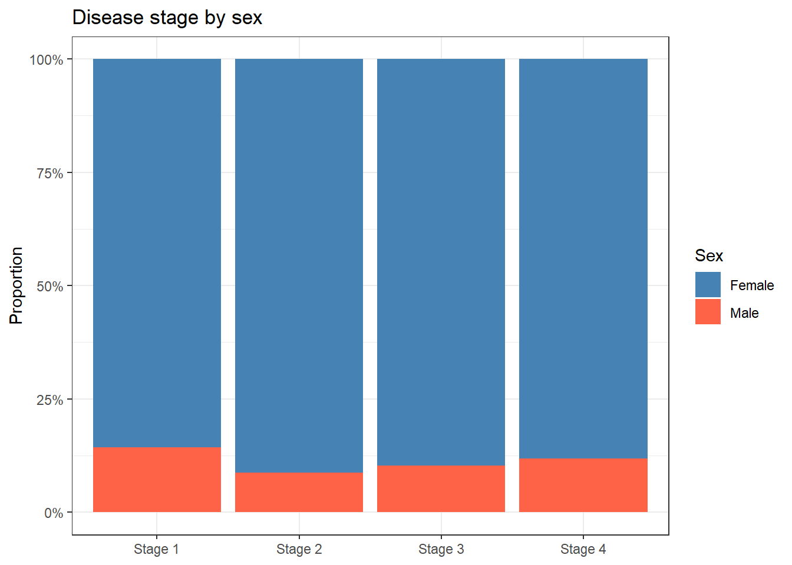
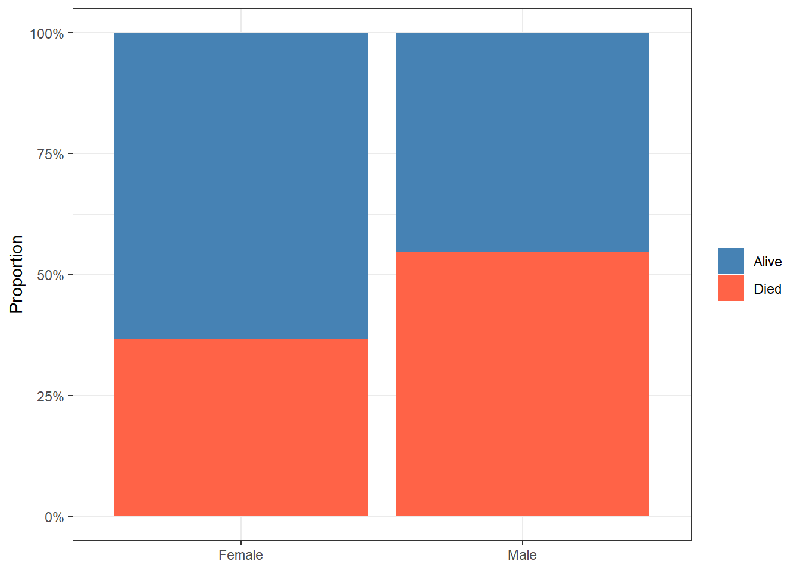

pbc <- survival::pbc %>%
as_tibble() %>%
clean_names() %>%
mutate(
sex = factor(sex, levels = c("f", "m"), labels = c("Female", "Male")),
trt = factor(trt, levels = c(1, 2), labels = c("D-penicillamine", "Placebo")),
stage = factor(stage, levels = 1:4, labels = paste("Stage", 1:4)),
died = as.integer(status == 2)
)7 Categorical Data and Chi-Square Tests
NoteSession at a Glance
Total core time: about 115 minutes (~2 hours).
| Section | Time | Type |
|---|---|---|
| When Do You Use This? + Learning Objectives | 5 min | Reading |
| The Key Idea: Comparing Observed to Expected | 15 min | Reading |
| Example 1: Clinical Data (PBC) | 30 min | Worked example |
| Example 2: Melanoma Data | 15 min | Worked example |
| What Can Go Wrong | 10 min | Reading |
| Exercises 1 & 2 | 30 min | Practice |
| Comprehension Check | 10 min | Self-test |
In a taught course, this session fits one teaching block. For self-paced study, split it into two sittings, e.g. the key idea and Example 1 first, Example 2 onward later. Exercise 3 is open-ended and works best as a follow-up using a dataset from your own field.
TipHow to Use the Code in This Session
Every code chunk below is written so you can copy it into your R console (or an R script) and run it yourself, in the order shown. Where you see a “Run It Yourself” box, stop and run the code above it before reading the explanation that follows.
7.1 When Do You Use This?
Tip
You want to know whether adverse event rates differ between two treatment arms: both outcomes are binary (event: yes/no). Or you want to know whether disease stage at diagnosis differs between men and women. These are questions about counts and proportions, not means. Chi-square and Fisher’s exact tests are the right tools.
NoteTeacher Note
Ask the room for a binary or categorical outcome from their own work: response/no response, complication/no complication, genotype categories. Keep one of those examples in mind through the session as an alternative to the PBC and melanoma examples below.
7.2 Learning Objectives
After completing this session you will be able to:
- Identify when chi-square or Fisher’s exact test is the right choice
- Explain what “expected counts” are and why they matter
- Construct a contingency table and run
chisq.test()andfisher.test()in R - Use
prop.test()to compare two proportions with a confidence interval - Build publication-quality frequency tables with
gtsummary - Report an association correctly: test result plus the actual proportions
7.3 The Key Idea: Comparing Observed to Expected
Estimated time: ~15 minutes (reading)
NoteTeacher Note
Board exercise: with the 2x2 table below on the board, ask the room to compute the four expected counts by hand using \(E = \frac{\text{row total} \times \text{column total}}{n}\) before you reveal that they are all 25. Then ask: “given the observed counts of 30, 70, 20, 80, does this table look close to that, or far from it?” This primes the chi-square statistic as a literal measure of distance between observed and expected.
Before we touch any R code, let’s build the intuition.
Suppose you run a clinical trial. At the end, you count how many people in the treatment group had a side effect versus the placebo group:
| Side effect | No side effect | Total | |
|---|---|---|---|
| Treatment | 30 | 70 | 100 |
| Placebo | 20 | 80 | 100 |
Are these groups really different, or could this just be chance? The chi-square test answers that by asking: if side effects had nothing to do with which group you were in, what counts would we expect?
If treatment and side effects were completely unrelated, side effects would be spread across groups in proportion to group size. With 50 side effects total out of 200 patients, each group of 100 would be expected to have exactly 25. The expected count for each cell is:
\[E = \frac{\text{row total} \times \text{column total}}{n}\]
Chi-square then measures how far the actual table is from this “no relationship” version:
\[\chi^2 = \sum \frac{(O - E)^2}{E}\]
A large chi-square means the observed table looks nothing like what we’d expect under independence, evidence of a real association. A small chi-square means the table is consistent with chance alone.
This is the same logic from the hypothesis testing session: we are asking “how surprising is this data if the null hypothesis (no association) were true?” The chi-square distribution with \((r-1)(c-1)\) degrees of freedom converts that statistic into a p-value.
7.4 Example 1: Clinical Data (PBC)
Estimated time: ~30 minutes (worked example)
NoteTeacher Note
The PBC dataset has appeared in several earlier sessions (always as continuous outcomes: albumin, bilirubin). Here every variable of interest is categorical (sex, stage) or binary (death). Ask the room: “if you wanted to test whether albumin level differed by sex, would you use chi-square?” The answer is no — chi-square is for the sex/stage question here, not for a continuous outcome like albumin.
7.4.1 Is Sex Associated with Disease Stage?
The PBC dataset (survival::pbc) records 418 patients with primary biliary cirrhosis. Before running anything, take a moment to think:
Think before you run: Do you expect sex and disease stage to be associated? In a randomised trial, baseline characteristics should not differ between arms by design. But this is an observational cohort. Is there a clinical reason men and women might present at different stages?
table(pbc$sex, pbc$stage)
Stage 1 Stage 2 Stage 3 Stage 4
Female 18 84 139 127
Male 3 8 16 17chisq.test(table(pbc$sex, pbc$stage))Warning in stats::chisq.test(x, y, ...): Chi-squared approximation may be
incorrect
Pearson's Chi-squared test
data: table(pbc$sex, pbc$stage)
X-squared = 0.87799, df = 3, p-value = 0.8307
TipRun It Yourself
Run the chunk above (you’ll see a warning about the chi-square approximation — some expected counts are small, which we’ll check properly with Fisher’s exact test next). You should get X-squared ≈ 0.88, df = 3, p ≈ 0.83. Far above 0.05: no evidence that the distribution of disease stage differs between men and women. Does this match what you predicted in “Think before you run”?
Reading the output:
| Output element | What it means |
|---|---|
X-squared = ... |
The chi-square statistic: how far observed counts are from expected |
df = 3 |
Degrees of freedom: (2 rows − 1) × (4 cols − 1) = 1 × 3 = 3 |
p-value = ... |
Probability of seeing this much difference by chance alone |
A significant p-value tells you the distribution of stages differs between men and women. It does not tell you which stages drive the difference: you need the table and the plot for that.
Visualise:
pbc %>%
filter(!is.na(sex), !is.na(stage)) %>%
ggplot(aes(x = stage, fill = sex)) +
geom_bar(position = "fill") +
scale_fill_manual(values = c("steelblue", "tomato")) +
scale_y_continuous(labels = scales::percent) +
labs(title = "Disease stage by sex",
x = NULL, y = "Proportion", fill = "Sex") +
theme_bw()
7.4.2 Fisher’s Exact Test for a Sparse Table
Chi-square relies on a large-sample approximation. When any expected cell count is below 5, that approximation breaks down and the p-value becomes unreliable. Fisher’s exact test computes the exact probability without any approximation: it is the right choice for sparse tables, regardless of sample size.
pbc_14 <- pbc %>%
filter(!is.na(sex), stage %in% c("Stage 1", "Stage 4"))
tab_14 <- table(pbc_14$sex, pbc_14$stage)
tab_14
Stage 1 Stage 2 Stage 3 Stage 4
Female 18 0 0 127
Male 3 0 0 17# Always check expected counts before choosing the test
chisq.test(tab_14)$expectedWarning in stats::chisq.test(x, y, ...): Chi-squared approximation may be
incorrect
Stage 1 Stage 2 Stage 3 Stage 4
Female 18.454545 0 0 126.54545
Male 2.545455 0 0 17.45455# If any expected count < 5, use Fisher's exact
fisher.test(tab_14)
Fisher's Exact Test for Count Data
data: tab_14
p-value = 0.723
alternative hypothesis: two.sided
TipRun It Yourself
Run the chunk above. The expected count for Male/Stage 1 is only ≈ 2.5, below the rule-of-thumb minimum of 5 — chi-square would not be reliable here. Fisher’s exact test gives p ≈ 0.72: no evidence of association between sex and stage in this restricted Stage 1 vs Stage 4 comparison.
7.4.3 Comparing Two Proportions with a CI
prop.test() compares two proportions and gives a confidence interval for the difference, the quantity you actually want to report. If the 95% CI for the difference includes zero, there is no statistically significant difference at the 5% level.
This is exactly the equivalence between confidence intervals and hypothesis tests from the previous session: the CI and the p-value always agree.
pbc_rand <- pbc %>% filter(!is.na(trt), !is.na(died))
deaths_by_trt <- pbc_rand %>%
group_by(trt) %>%
summarise(n = n(), deaths = sum(died))
prop.test(x = deaths_by_trt$deaths, n = deaths_by_trt$n)
2-sample test for equality of proportions with continuity correction
data: deaths_by_trt$deaths out of deaths_by_trt$n
X-squared = 0.076731, df = 1, p-value = 0.7818
alternative hypothesis: two.sided
95 percent confidence interval:
-0.09334697 0.13691100
sample estimates:
prop 1 prop 2
0.4113924 0.3896104
TipRun It Yourself
Run the chunk above. You should get X-squared ≈ 0.077, p ≈ 0.78, and a 95% CI for the difference in death rates of about (-0.093, 0.137) — straddling zero. The randomised treatment groups do not differ in mortality, consistent with the comparable baseline albumin and bilirubin values seen in earlier sessions.
7.4.4 Publication-Quality Table with gtsummary
pbc %>%
filter(!is.na(trt)) %>%
select(trt, sex, stage, died) %>%
tbl_summary(
by = trt,
statistic = list(all_categorical() ~ "{n} ({p}%)")
) %>%
add_p() %>%
bold_labels()| Characteristic | D-penicillamine N = 1581 |
Placebo N = 1541 |
p-value2 |
|---|---|---|---|
| sex | 0.3 | ||
| Female | 137 (87%) | 139 (90%) | |
| Male | 21 (13%) | 15 (9.7%) | |
| stage | 0.2 | ||
| Stage 1 | 12 (7.6%) | 4 (2.6%) | |
| Stage 2 | 35 (22%) | 32 (21%) | |
| Stage 3 | 56 (35%) | 64 (42%) | |
| Stage 4 | 55 (35%) | 54 (35%) | |
| died | 65 (41%) | 60 (39%) | 0.7 |
| 1 n (%) | |||
| 2 Pearson’s Chi-squared test | |||
add_p() automatically selects chi-square or Fisher’s exact depending on expected cell counts: no manual checking required for this table format.
7.5 Example 2: Melanoma Data
Estimated time: ~15 minutes (worked example)
NoteTeacher Note
Unlike the PBC sex/stage comparison above, this example produces a significant result. Use the contrast deliberately: a non-significant chi-square (PBC) and a significant one (melanoma) side by side help students see that “the test didn’t find anything” and “the test found something” are both normal outcomes, not a sign of doing it wrong.
mel <- boot::melanoma %>%
as_tibble() %>%
mutate(
ulceration = factor(ulcer, levels = c(0, 1), labels = c("No", "Yes")),
sex = factor(sex, levels = c(0, 1), labels = c("Female", "Male")),
status_cat = factor(status, levels = c(1, 2, 3),
labels = c("Died (melanoma)", "Alive", "Died (other)"))
)7.5.1 Is Ulceration Associated with Sex?
tab_mel <- table(mel$sex, mel$ulceration)
tab_mel
No Yes
Female 79 47
Male 36 43chisq.test(tab_mel)
Pearson's Chi-squared test with Yates' continuity correction
data: tab_mel
X-squared = 5.1099, df = 1, p-value = 0.02379tidy(chisq.test(tab_mel))# A tibble: 1 × 4
statistic p.value parameter method
<dbl> <dbl> <int> <chr>
1 5.11 0.0238 1 Pearson's Chi-squared test with Yates' continuity…
TipRun It Yourself
Run the chunk above. The table is 79/47 (Female: no/yes ulceration) vs 36/43 (Male: no/yes). With Yates’ correction, X-squared ≈ 5.11, df = 1, p ≈ 0.024 — below 0.05. Unlike the PBC sex/stage example, this one is statistically significant: ulceration is more common among male patients in this sample.
7.5.2 Relative Risk and Odds Ratio
For a 2×2 table, the p-value only tells you whether an association exists. You need an effect size measure to say how strong it is. Two measures are common:
- Relative risk (RR): The proportion in group A divided by the proportion in group B. Directly interpretable: “Men are 1.4× more likely to have ulceration.”
- Odds ratio (OR): More common in case-control studies and logistic regression. Numerically equals the RR only when events are rare.
a <- tab_mel["Male", "Yes"]
b <- tab_mel["Male", "No"]
c <- tab_mel["Female", "Yes"]
d <- tab_mel["Female", "No"]
rr <- (a / (a + b)) / (c / (c + d))
or <- (a * d) / (b * c)
cat("Relative Risk:", round(rr, 2), "\n")Relative Risk: 1.46 cat("Odds Ratio: ", round(or, 2), "\n")Odds Ratio: 2.01
TipRun It Yourself
Run the chunk above. You should get RR ≈ 1.46 and OR ≈ 2.01. Men in this sample are 1.46× as likely to have ulceration as women. The OR (2.01) is noticeably larger than the RR (1.46) — a reminder that the OR exaggerates the association relative to the RR when the outcome is not rare (ulceration occurs in roughly a third to a half of patients here).
For logistic regression-based ORs with 95% CIs, see the Logistic Regression session.
NoteWhere to Find Data Like This
PBC dataset: survival::pbc: stage, sex, treatment, status: all categorical.
boot::melanoma: boot::melanoma: sex, ulceration, survival status: classic 2×2 scenarios.
MASS::birthwt: Binary outcome (low birth weight) with categorical predictors.
NHANES (nhanes package): Large population survey with many categorical health variables.
WarningWhat Can Go Wrong
Estimated time: ~10 minutes (reading)
Using chi-square with small expected counts. When any expected cell count is < 5, the chi-square approximation is unreliable. Use fisher.test(). R warns you when this occurs: do not ignore that warning.
Confusing counts with proportions. chisq.test() requires a table of counts, not proportions. Dividing cells by totals before running the test gives wrong results.
Yates’ continuity correction. R applies Yates’ correction by default for 2×2 tables (correct = TRUE), making the test more conservative. Use correct = FALSE to match Pearson’s chi-square, but be consistent in your reporting.
Interpreting significance as strong association. With large samples, chi-square detects tiny, clinically irrelevant differences. Supplement the p-value with an effect size: Cramér’s V for larger tables, or relative risk/odds ratio for 2×2 tables.
Forgetting that chi-square is non-directional. A significant chi-square tells you the variables are associated, not which group has a higher proportion. Always report the contingency table or a bar chart alongside the test.
NoteTeacher Note
Quick true/false check, drawing on the points above:
- “R prints ‘Chi-squared approximation may be incorrect’ but still gives a p-value, so it’s fine to report it.” (False – switch to
fisher.test().) - “
chisq.test()works the same whether you give it counts or proportions.” (False – it needs counts.) - “A chi-square p-value of 0.001 tells you which group has the higher proportion.” (False – chi-square is non-directional; check the table or proportions to see direction.)
7.6 Exercises
NoteTeacher Note
Pair students up for these exercises. Before running Exercise 1, ask each pair to predict: based on what they’ve seen of the PBC dataset in earlier sessions, do they expect sex to be associated with survival? Exercise 2 revisits the same mel$sex x mel$ulceration table used in Example 2, but asks students to compute the odds ratio by hand – a useful check that they understand how the four cells of a 2x2 table map onto the OR formula.
7.6.1 Exercise 1 (Guided): Sex and Mortality in PBC
Estimated time: ~15 minutes
- Create a 2×2 table of
sexbydiedinpbc. - Run a chi-square test. Check that all expected counts are ≥ 5.
- Run
prop.test()and report the proportion who died in each sex group with the 95% CI for the difference. - Plot the proportions.
TipExercise 1: Solution
tab_sx <- table(pbc$sex, pbc$died)
tab_sx
0 1
Female 237 137
Male 20 24chisq.test(tab_sx)$expected # check all ≥ 5
0 1
Female 229.94737 144.05263
Male 27.05263 16.94737tidy(chisq.test(tab_sx))# A tibble: 1 × 4
statistic p.value parameter method
<dbl> <dbl> <int> <chr>
1 4.61 0.0319 1 Pearson's Chi-squared test with Yates' continuity…prop.test(tab_sx)
2-sample test for equality of proportions with continuity correction
data: tab_sx
X-squared = 4.6055, df = 1, p-value = 0.03187
alternative hypothesis: two.sided
95 percent confidence interval:
0.01142666 0.34686211
sample estimates:
prop 1 prop 2
0.6336898 0.4545455 pbc %>%
filter(!is.na(sex)) %>%
ggplot(aes(x = sex, fill = factor(died, labels = c("Alive", "Died")))) +
geom_bar(position = "fill") +
scale_fill_manual(values = c("steelblue", "tomato")) +
scale_y_continuous(labels = scales::percent) +
labs(x = NULL, y = "Proportion", fill = NULL) +
theme_bw()
7.6.2 Exercise 2 (Semi-guided): Ulceration and Sex in Melanoma
Estimated time: ~15 minutes
Using boot::melanoma, test whether ulceration status differs by sex.
- Build a 2×2 contingency table.
- Check expected counts and choose chi-square or Fisher’s exact.
- Compute the odds ratio manually and interpret it in one plain-language sentence.
TipExercise 2: Solution
tab_m <- table(mel$sex, mel$ulceration)
chisq.test(tab_m)$expected # check for < 5
No Yes
Female 70.68293 55.31707
Male 44.31707 34.68293tidy(chisq.test(tab_m))# A tibble: 1 × 4
statistic p.value parameter method
<dbl> <dbl> <int> <chr>
1 5.11 0.0238 1 Pearson's Chi-squared test with Yates' continuity…a <- tab_m["Male", "Yes"]; b <- tab_m["Male", "No"]
c <- tab_m["Female", "Yes"]; d <- tab_m["Female", "No"]
cat("OR:", round((a * d) / (b * c), 2))OR: 2.017.6.3 Exercise 3 (Open-ended)
Estimated time: 15–30 minutes
Find a binary or nominal outcome in your own data. Construct a contingency table with a grouping variable of interest. Run the appropriate test, check assumptions, and write a two-sentence result suitable for a paper, including the actual proportions, not just the p-value.
7.7 Comprehension Check
Estimated time: ~10 minutes (self-test)
- When should you use Fisher’s exact test instead of chi-square?
- R prints: “Chi-squared approximation may be incorrect.” What does this mean and what should you do?
- A chi-square test gives p = 0.001. Does this tell you which group has a higher proportion of events?
- What is the difference between a relative risk and an odds ratio? When are they approximately equal?
- You have a 3×4 contingency table (3 groups, 4 categories). What are the degrees of freedom?
NoteAnswers
- When any expected cell count is < 5. Fisher’s exact test does not rely on the large-sample approximation and is valid for any sample size.
- At least one expected cell count is < 5, so the chi-square approximation is unreliable. Switch to
fisher.test(). - No. Chi-square is non-directional: it tells you whether an association exists, not its direction or magnitude. Examine the contingency table or proportions to see which group has higher rates.
- Relative risk = (proportion in group A) / (proportion in group B). Odds ratio = (odds in group A) / (odds in group B). They are approximately equal when events are rare (below 10–15% in both groups). For common outcomes, the OR exaggerates the association relative to the RR.
- Degrees of freedom = (rows − 1) × (columns − 1) = (3 − 1) × (4 − 1) = 2 × 3 = 6.
7.8 How to Report
Note
In a methods section: “The association between [categorical variable 1] and [categorical variable 2] was assessed using the chi-square test of independence. Fisher’s exact test was used where any expected cell count was below 5.”
In results: “There was a significant association between [var 1] and [var 2] (χ²(df) = X, p = Y). [Group A] had a higher proportion of [outcome] than [group B] (X% vs Y%).”
Always include:
- The chi-square statistic with degrees of freedom: χ²(2) = 8.4
- The p-value
- The actual proportions: the test result alone is not informative
- Whether Fisher’s exact was used (and why)
- An effect size for 2×2 tables: odds ratio or relative risk with 95% CI
For models that estimate odds ratios with confidence intervals directly, see the Logistic Regression session.
7.9 Further Reading
- Agresti (2019): An Introduction to Categorical Data Analysis, the standard reference
- Bland (2015): Chi-square and Fisher’s test in An Introduction to Medical Statistics
?chisq.test,?fisher.test,?prop.testin R: built-in documentation with examples
Agresti, Alan. 2019. An Introduction to Categorical Data Analysis. 3rd ed. John Wiley & Sons.
Bland, Martin. 2015. An Introduction to Medical Statistics. 4th ed. Oxford University Press.